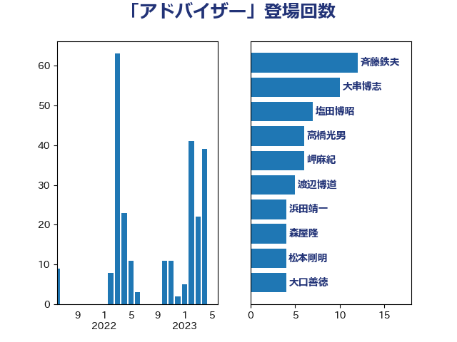

単語「アドバイザー」

| 斉藤鉄夫 | 公明党 | 12 回 |
| 大串博志 | 立憲民主党 | 10 回 |
| 塩田博昭 | 公明党 | 7 回 |
| 高橋光男 | 公明党 | 6 回 |
| 岬麻紀 | 日本維新の会 | 6 回 |
| 渡辺博道 | 自由民主党 | 5 回 |
| 浜田靖一 | 自由民主党 | 4 回 |
| 森屋隆 | 立憲民主党 | 4 回 |
| 松本剛明 | 自由民主党 | 4 回 |
| 大口善徳 | 公明党 | 4 回 |
| 金子恭之 | 自由民主党 | 3 回 |
| 萩生田光一 | 自由民主党 | 3 回 |
| 河野太郎 | 自由民主党 | 3 回 |
| 永岡桂子 | 自由民主党 | 3 回 |
| 小林鷹之 | 自由民主党 | 3 回 |
| 小宮山泰子 | 立憲民主党 | 3 回 |
| 馬淵澄夫 | 立憲民主党 | 2 回 |
| 田村貴昭 | 日本共産党 | 2 回 |
| 岸田文雄 | 自由民主党 | 2 回 |
| 高良鉄美 | 無所属 | 1 回 |
| 高木かおり | 日本維新の会 | 1 回 |
| 青柳仁士 | 日本維新の会 | 1 回 |
| 鈴木敦 | 国民民主党 | 1 回 |
| 鈴木俊一 | 自由民主党 | 1 回 |
| 野村哲郎 | 自由民主党 | 1 回 |
| 赤羽一嘉 | 公明党 | 1 回 |
| 西銘恒三郎 | 自由民主党 | 1 回 |
| 衛藤晟一 | 自由民主党 | 1 回 |
| 蓮舫 | 立憲民主党 | 1 回 |
| 若松謙維 | 公明党 | 1 回 |
| 稲津久 | 公明党 | 1 回 |
| 福重隆浩 | 公明党 | 1 回 |
| 福島伸享 | 無所属 | 1 回 |
| 福島みずほ | 社会民主党 | 1 回 |
| 猪口邦子 | 自由民主党 | 1 回 |
| 熊谷裕人 | 立憲民主党 | 1 回 |
| 河西宏一 | 公明党 | 1 回 |
| 横山信一 | 公明党 | 1 回 |
| 森山浩行 | 立憲民主党 | 1 回 |
| 梅村聡 | 日本維新の会 | 1 回 |
| 林芳正 | 自由民主党 | 1 回 |
| 末松信介 | 自由民主党 | 1 回 |
| 木村英子 | れいわ新選組 | 1 回 |
| 早稲田ゆき | 立憲民主党 | 1 回 |
| 斎藤嘉隆 | 立憲民主党 | 1 回 |
| 斎藤アレックス | 国民民主党 | 1 回 |
| 打越さく良 | 立憲民主党 | 1 回 |
| 平木大作 | 公明党 | 1 回 |
| 川田龍平 | 立憲民主党 | 1 回 |
| 岩渕友 | 日本共産党 | 1 回 |
| 山田宏 | 自由民主党 | 1 回 |
| 山岸一生 | 立憲民主党 | 1 回 |
| 山口那津男 | 公明党 | 1 回 |
| 小倉將信 | 自由民主党 | 1 回 |
| 寺田稔 | 自由民主党 | 1 回 |
| 守島正 | 日本維新の会 | 1 回 |
| 太田房江 | 自由民主党 | 1 回 |
| 大野敬太郎 | 自由民主党 | 1 回 |
| 堤かなめ | 立憲民主党 | 1 回 |
| 堀場幸子 | 日本維新の会 | 1 回 |
| 土田慎 | 自由民主党 | 1 回 |
| 加藤勝信 | 自由民主党 | 1 回 |
| 伊藤俊輔 | 立憲民主党 | 1 回 |
| 中田宏 | 自由民主党 | 1 回 |
| 中村裕之 | 自由民主党 | 1 回 |
| 上野通子 | 自由民主党 | 1 回 |
| 上田清司 | 国民民主党 | 1 回 |
| ながえ孝子 | 無所属 | 1 回 |